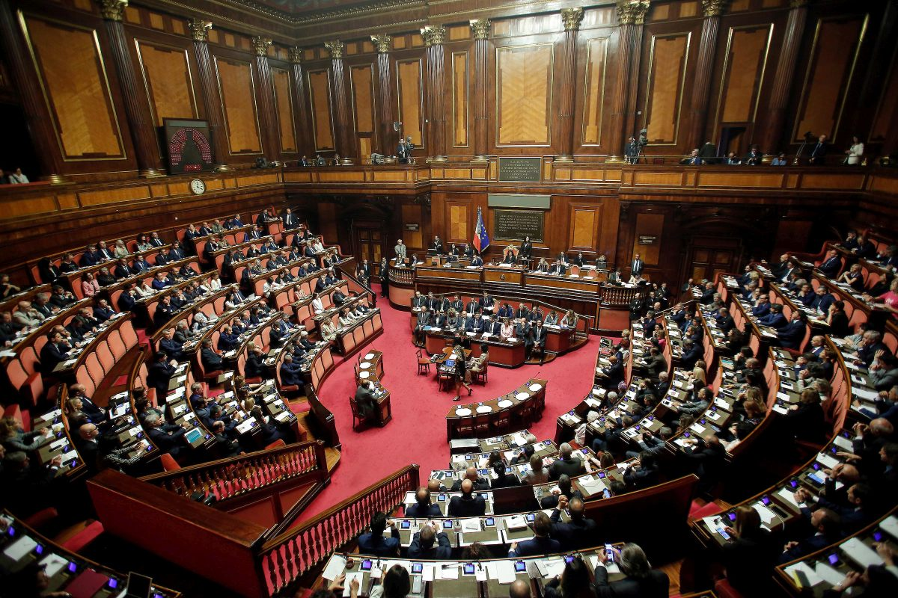
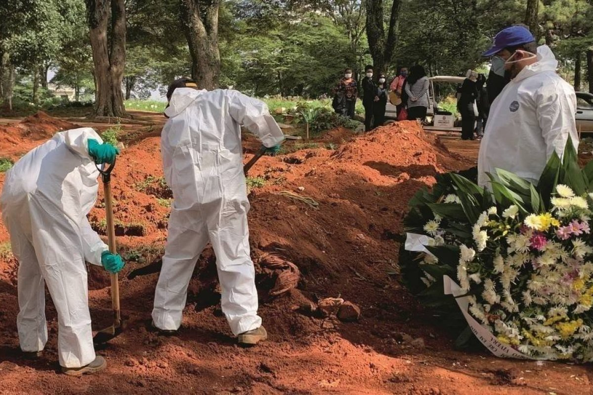

NP
Notícias Populares
A negligência do GovernoO governo de Bolsonaro nunca deixou de tratar a pandemia como uma “gripezinha”, adotando uma política genocida, de desprezo pela Ciência e pelas medidas sanitárias de prevenção e combate ao coronavírus. Se de início alguns governadores agiram diferente (mesmo que de forma parcial e também insuficiente), agora fazem o mesmo que Bolsonaro e, em nome do lucro, vêm tomando medidas de fim do isolamento social e liberação geral de atividades econômicas, apesar do descontrole da contaminação. Leia mais clicando na imagem!! |
As mortes por Covid-19Leia mais clicando na imagem!! Milionários ficam mais ricos na pandemiaLeia mais clicando na imagem!! |

Emily Rharysa Furtado Severino
GU3016196